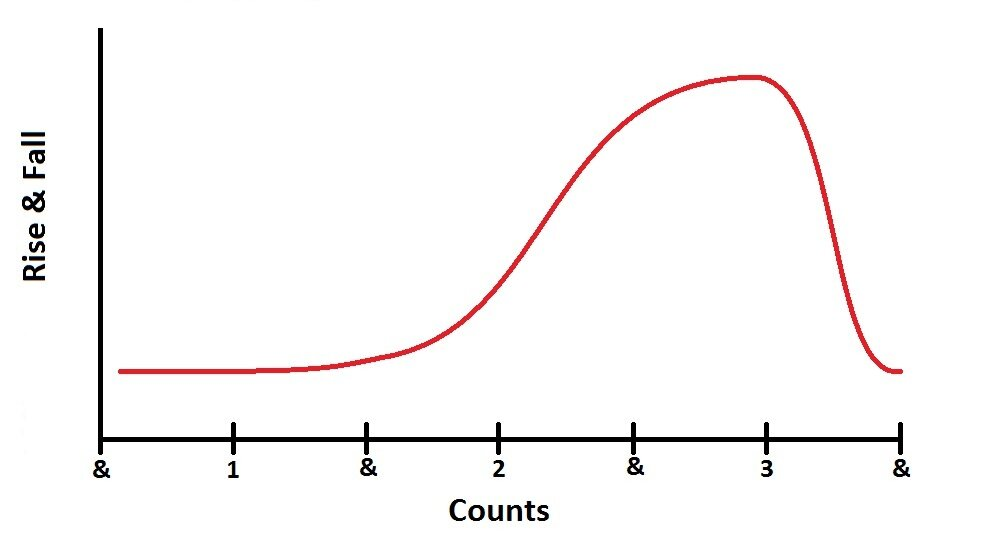
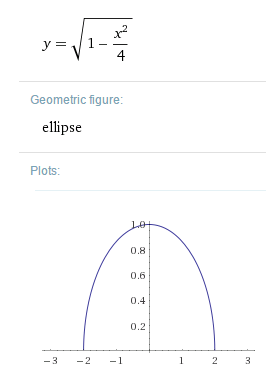

Rise & Fall in Waltz: Part 1
7 March 2016
From the very beginning students of dance learn that Rise and Fall is a critical aspect to Waltz. Not only does this mechanic give the dance its signature look, but it also powers movement, and generates Swing and Sway. Go to any Bronze competition and you will see the wrong technique being used by almost everyone on the floor: on beat 2, everybody pops up with a sharp rise. We know Rise and Fall is supposed to flow, but what does that mean exactly? Here, we will examine in great detail the Rise and Fall of the most basic Waltz figures.
The Traditional Technique
The most basic Waltz figures, such as the Natural and Reverse Turns, have the following Rise and Fall:
Commence to Rise at the end of 1
Continue to Rise on 2 and 3
Lower at the end of 3
This Rise and Fall is repeated for the six steps of the full Natural Turn and the full Reverse Turn, but there are other types of Rise and Fall. Figures that end with feet apart, such as Chasses, Whisks, or Telemarks, all have different Rise and Fall. Today, however, we will only be examining the figures in Waltz that have the Rise and Fall as described above, which is to say, any figure that ends with the Man and Lady both having closed their feet.
In Depth Explanation
Let's look specifically at the Rise and Fall for steps 1-3 of a Natural Turn (Lady's steps 4-6). Remember, this is the same Rise and Fall used in every Waltz figure where the feet end closed. Below is an in depth explanation of the Rise and Fall for each half beat of music. Key elements have been excluded, such as Turn, and this explanation focuses only on Rise and Fall.
Commence weight weight on the LF, with RF free, at the lowest point in your rise and fall, having danced a Prep Step or any suitable figure (if Lady, then having danced 1-3 of Natural Turn).
| 1 | With weight on the ball of the LF and commencing to release the left heel, commence to send the body weight and RF forward with the ball of the foot in contact with the floor, extending the left leg and then step Heel to Toe, with weight firmly split between the two feet, and strong pressure into the ball of the back foot. |
| & | Flex the R knee strongly to bring the body over the RF, rolling through the Toe of the back foot, and commencing to rise very slightly as the body arrives over the foot. |
| 2 | Swing through the RF, straightening the right knee and continuing the rise smoothly. Place the LF to the side high on the Toe (i.e. as high on the ball of the foot as possible), with weight split evenly between the two feet and strong pressure into the ball of the RF. |
| & | With both ankles pointed to the maximum and both legs straight, but not locked, commence to draw the feet together slowly, which causes you to rise further. |
| 3 | Close RF to LF, both ankles pointed to the maximum and both legs straight but not locked, reaching the highest point in your rise. |
| & | Lower strongly on the RF, first to the heel, then into the knee, all the while extending the LF back, without weight, first on the ball and then on the Toe. |
What it Should Look Like
Okay, words are nice and all, but most people learn better by seeing than reading. This graph shows where you should be in your Rise and Fall at any point in a Natural Turn.
Commence to Rise at the end of 1
One of the most common faults in beginners is that they lower on step 1, but in the graph above, it should be clear that you should neither rise nor fall on step 1, and it is only at the end of 1 that you even commence to rise. This is because the extension of your leg should be powering you to move forward, not up or down. At the end of the first step, when your weight has gotten over your front foot, you just begin to experience rise.
Continue to Rise on 2 and 3
 By the time you reach step 2, your legs should be fairly straight. What causes you to rise between steps 2 and 3 is the closing of the feet - that's it. Think of it like this: your legs and the floor form a triangle. When you close your legs and stand with feet together, your triangle is very skinny and very tall. If you can do the splits, then your triangle is very wide and very short. As you go from one extreme to the other, Rise occurs. In Waltz, we thankfully don't have to do the splits, but we do Rise in the same way just by virtue of closing our legs. The exact amount of Rise (for all you math and physics buffs out there) is represented by the equation to the right. For the rest of us less math-savvy dancers, this means that the Rise generated by closing our legs is a smooth rise with the appearance of a plateau on top for a split second, which is exactly what we want in Waltz.
Lower at the end of 3
After that plateau, which occurs on beat 3 and is when you change feet, there needs to be a sharp Fall that occurs within half a beat. By relaxing your legs and allowing your weight to Fall, you generate power for your next driving step. Think of this like going down a waterslide. First you drop quickly and build up speed, and then you level out and your momentum carries you for a distance. If you've ever wondered how great dancers take such big steps, this is how. By using the correct Fall and allowing gravity to work for you, you will make your Waltz feel and look a lot more fluid.
Putting this into Effect
Confucius say... "I hear and I forget. I see and I remember. I do and I understand." Hopefully seeing and reading this post will help you remember, but to truly understand you need to put it into your dancing. Practice this way of dancing your Rise and Fall, and before you know it your Waltz will feel easy, and look superb!